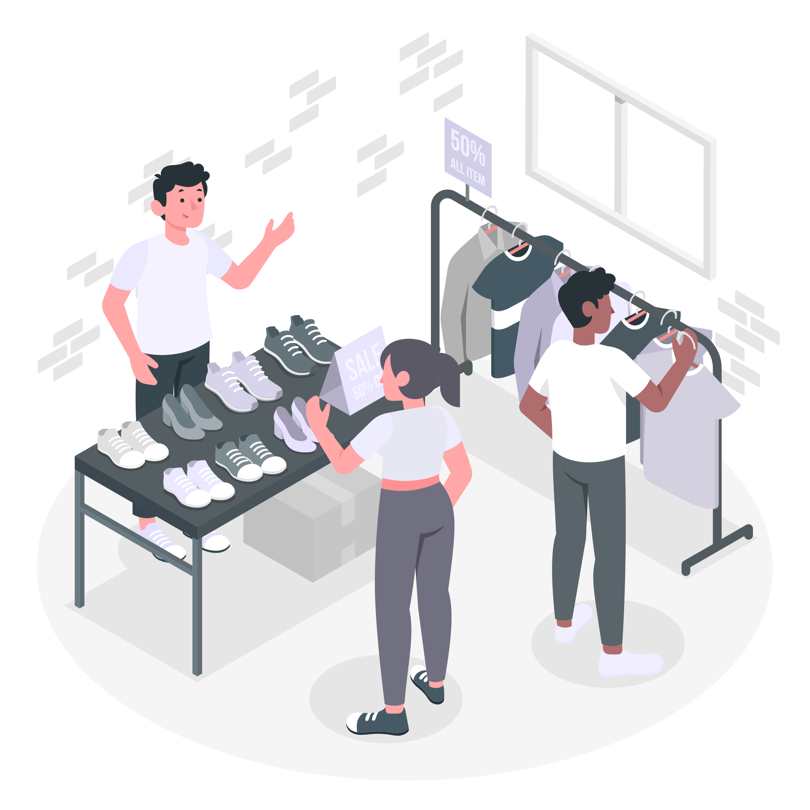
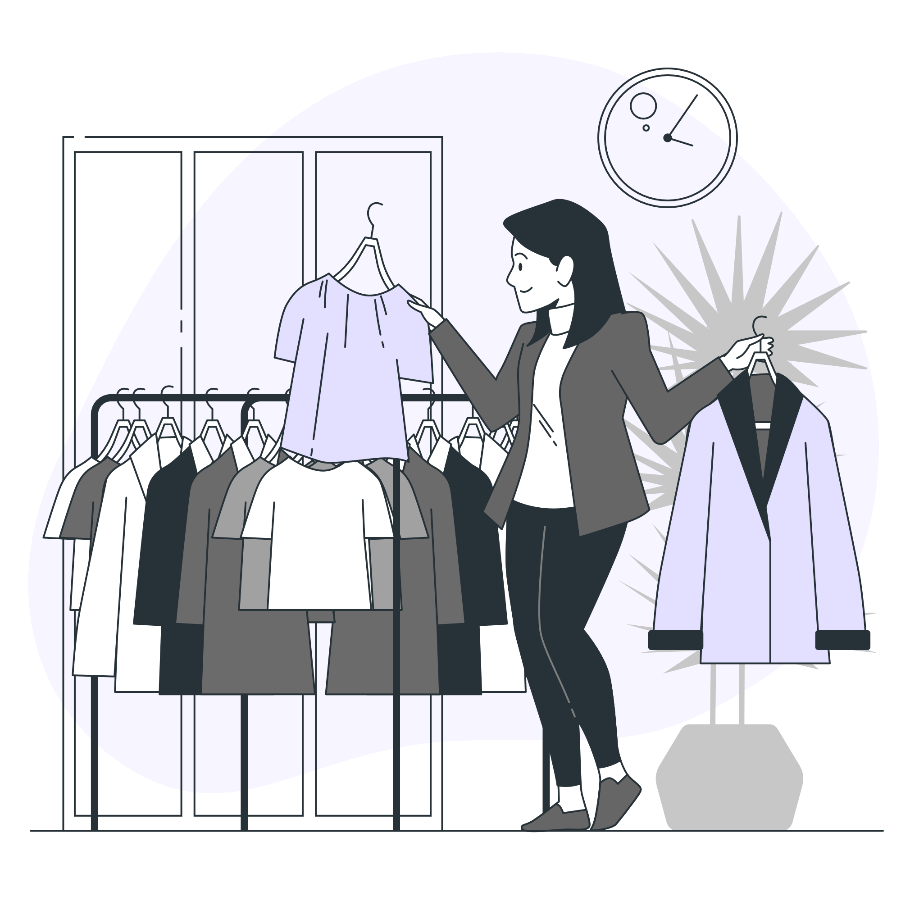

so......
what can be done?
reinvest into the system
Shop for second-hand clothes at thrift stores or charity shops to give clothing new life. If you can’t get to the physical stores, many will post their stock for purchase on their website for easy online shopping
one mans trash...
“One man’s trash is another man’s treasure.” And in this scenario, the men are actually your friends! You might have an item in your closet that you’ve grown out of or grown less fond of. That doesn’t make the item worthy of the landfill. Organizing a clothing swap is one of the best ways to give clothing a second chance at fulfilling their destiny: being worn. Make a night of it! Get some tasty food and good tunes involved and swap clothes with your friends or family members. Consider donating whatever doesn’t get claimed to a local shelter
nothing going on but the rent
Remember that wedding you went to three years ago? The outfit you bought specifically for the big day and never wore again? Wouldn’t it have been better to rent a chic outfit for the event and return it after the weekend is over? Renting clothes is one of the smartest approaches to sustainable fashion available to us today—especially for special occasions! Renting clothes allows you to try new trends without taking up space in your closet or creating waste in land
better check yourself
If you own more than 50 articles of clothing, you might forget about each item you own. Purchasing the same or similar items is a common problem with fast fashion victims. There is so much turnaround with clothes, victims often wind up with multiples of the same cheap item. Go through your closet monthly or seasonally and take a mental tally of what’s in there so you do not risk item duplication.
127.0.0.1.
97% of fashion items are made overseas. If you can find goods that are made and sold nearby, you are winning the war against fast fashion! Look for local shops that follow ethical and sustainable practices. Buying items that are made locally reduces emissions because the items don’t have to travel as far to get from the manufacturer to the consumer.